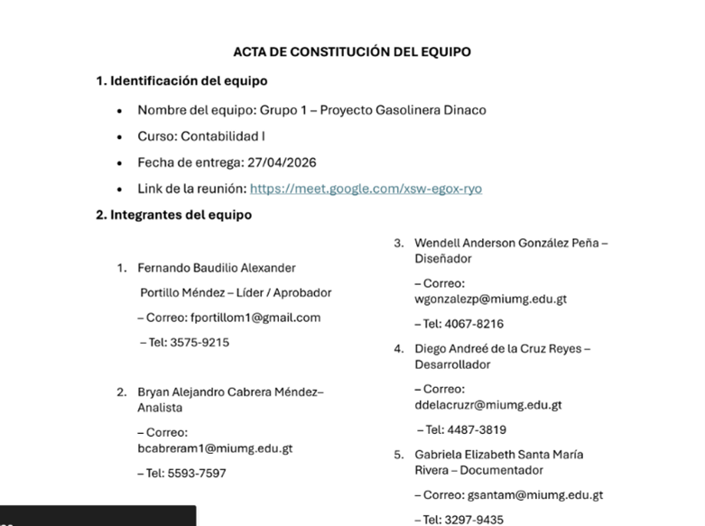

Es una ciencia o técnica cuyo objetivo es aportar información de utilidad para la toma de decisiones económicas, es la disciplina del conocimiento humano que se encarga de llevar cuenta y razón de las operaciones mercantiles de una entidad comercial o de otro tipo.
En el curso de Contabilidad I aprendí a registrar operaciones financieras, clasificar cuentas y elaborar libros diarios. Me asigno un 63% porque comprendo los conceptos y puedo aplicarlos, pero todavía necesito más práctica para dominar completamente algunos procedimientos.
Proyecto: Creación de una empresa (Market Dinaco).
Descripción: Se creó una empresa bajo sociedad limitada, tenemos que hacer una presentación, cuadrar libros diario, mayor y balance.
Objetivo: Comprender cómo se lleva el control financiero en una empresa.
Aprendizaje: Aprendí a como es liderar un grupo y también a tener más responsabilidad y seriedad en trabajos más formales.
video:
